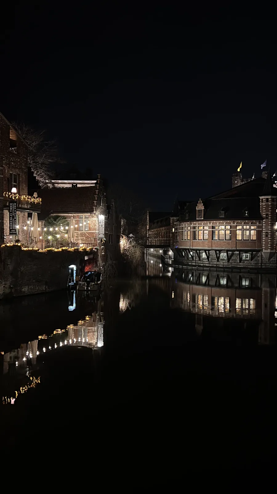
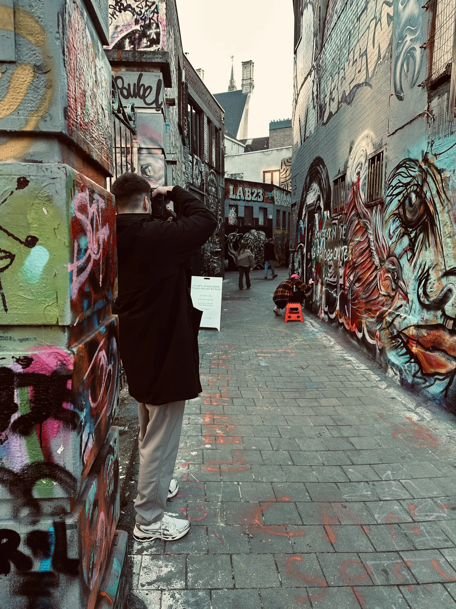
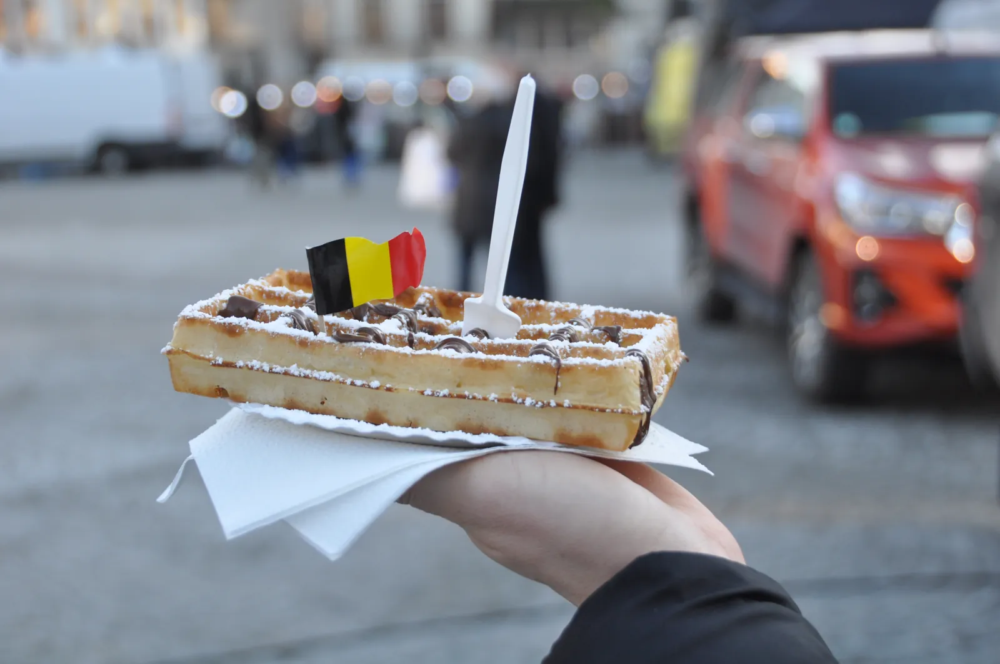
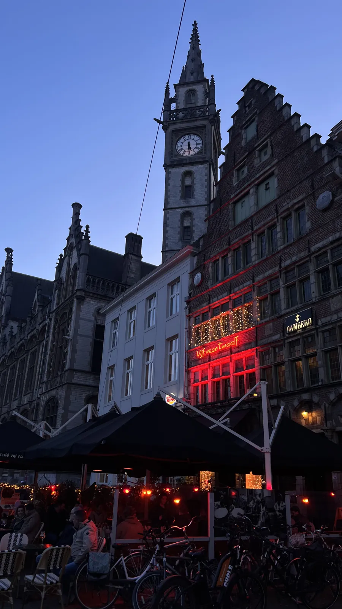
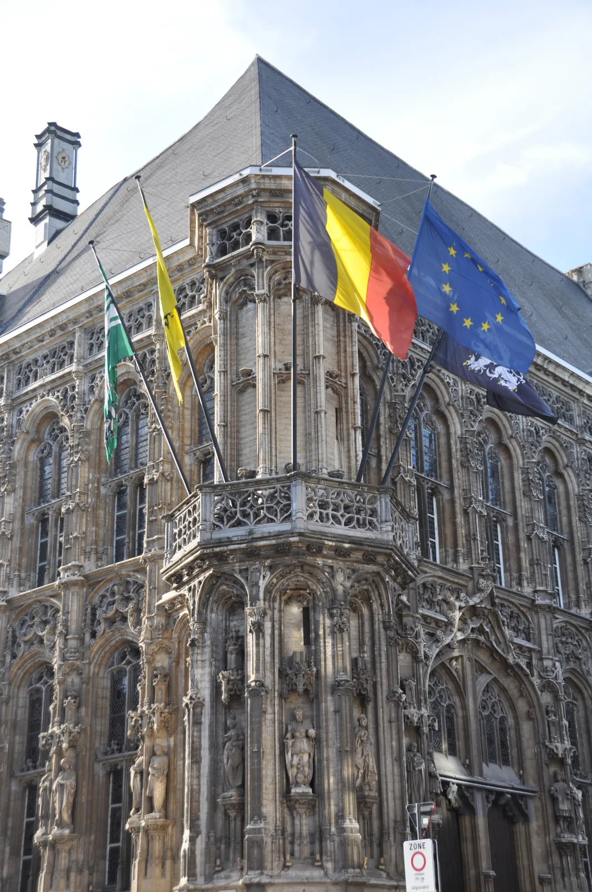
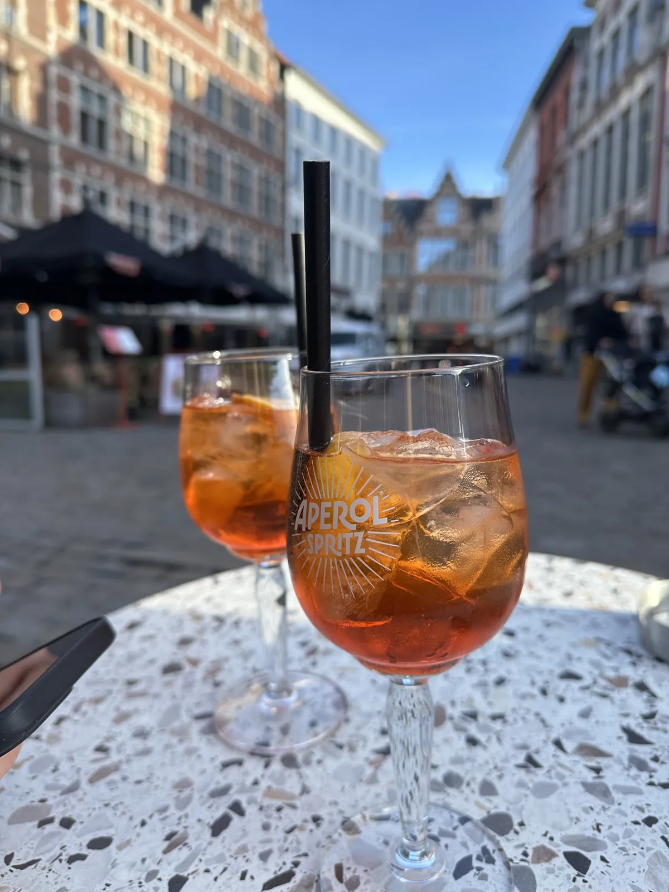
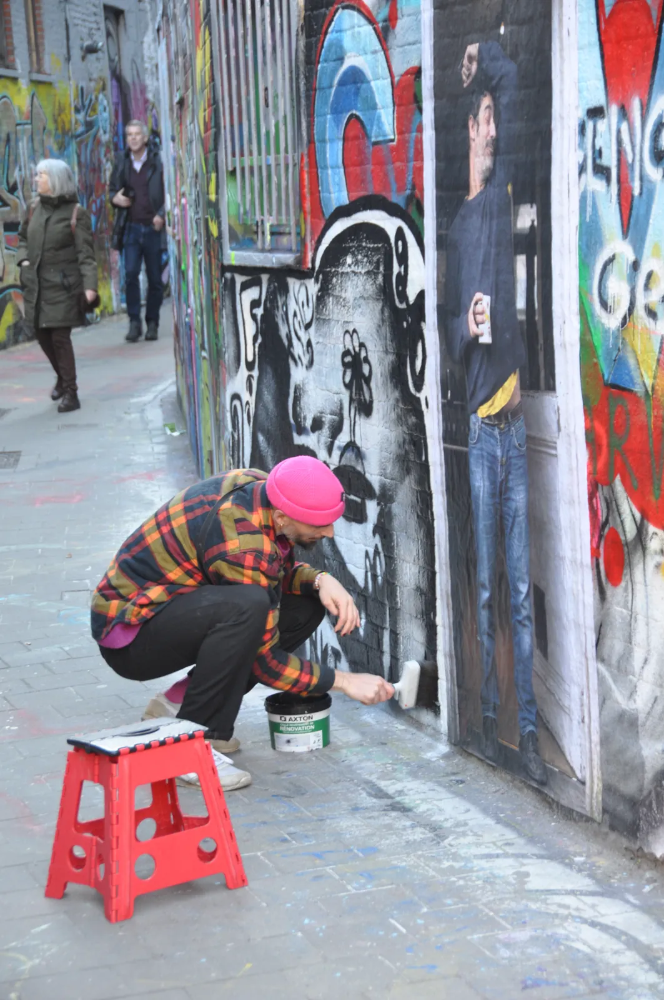
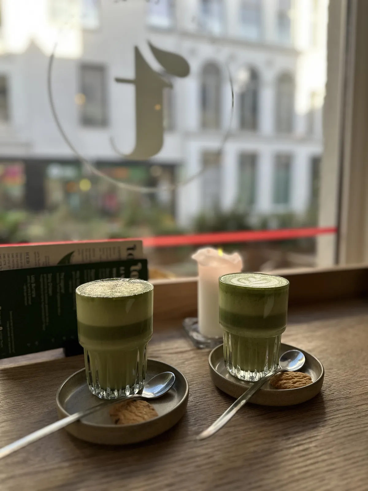
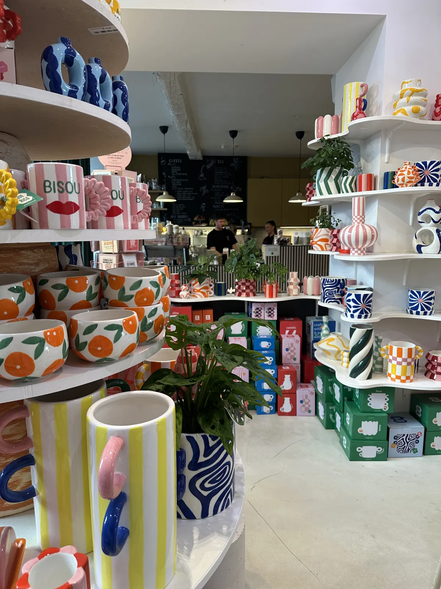

🇧🇪 Ghent Guide: Graslei, the Graffiti Lane & Waffles in 2 Days

Table of contents
Everybody knows Bruges. Ghent is far less often on the list – wrongly. The city is compact, walkable and has enough canals, street art and cafés for two full days. Add to that a history far bigger than the city: in the Middle Ages, thanks to the cloth trade, Ghent was one of the largest cities in Europe north of the Alps.
This guide shows you how to experience Ghent in two days, what to eat and how to get there cheaply and comfortably. Prices and opening hours are guidelines (2026) – check briefly before you go.
My story in Ghent
I was in Ghent in January 2026. On the very first evening: guild houses reflected in black water, lights on the façades, the quays almost empty. The next day sightseeing boats glide through the canals and the Graslei is full of life. In the Werregarenstraatje an artist with a paint bucket and a red stool stood at the wall and just kept painting – what I photographed probably no longer exists in that form. Add a Belgian waffle with a little flag on top, matcha in a small café near the cathedral and an Aperol on the Korenmarkt in the winter sun. In front of the town hall with its flags I searched for the perfect angle for a long time.



This guide contains affiliate links (GetYourGuide, Omio). If you book through them I earn a small commission – you never pay a cent more. Prices and opening hours change – double-check before you go.
At a glance
Getting to Ghent and around
By train
The station is Gent-Sint-Pieters. From Brussels the trip takes about 30 minutes, from Bruges about 25. From Brussels Airport trains run direct or with a change at Brussels-Noord, about 50–70 minutes (current timetables at NMBS/SNCB). From Antwerp it is, in my experience, about an hour – ideal for a long weekend with both cities.
In the city
The old town is compact and easy to explore on foot. From the station to the Korenmarkt the tram takes about 5–10 minutes; a single ride costs around €3 and is valid for an hour (De Lijn, card or phone payment possible).
Gent City Card
The Gent City Card covers several attractions including the Gravensteen. Work out beforehand whether it pays off for your plan – the city advertises savings of up to €20.
1. Graslei, guild houses & the old town
Graslei und Korenlei
Guild houses reflected in the water – in the evening the façades glow, by day sightseeing boats glide through the canals. On Google the Graslei has 4.8 stars. It gets crowded by day, while in the evening the quays are much quieter.
Tip: Come to the Graslei at night on your first evening – the lights on the façades make the best photo. Canal boat tours from Graslei/Korenlei take about 40 minutes and cost around €10–11.

Town hall & Korenmarkt
The town hall with its flags is a photo motif in itself – take your time to find the angle. You can view the façade for free. On the Korenmarkt you can sit in the sun with an Aperol even in winter, and there are plenty of restaurants.


Gravensteen
The castle of the counts in the middle of the city is almost entirely stone and well preserved, with an armoury display and views from the top. On Google it has 4.6 stars from around 37,000 reviews; visitors recommend the longer audio guide.
Tip: Book tickets in advance – there are fixed time slots, and spontaneous visits can mean queues.
St Bavo’s Cathedral and the Ghent Altarpiece
The cathedral holds the Ghent Altarpiece by the van Eyck brothers – one of the most stolen artworks in the world; one panel has been missing since 1934. Emperor Charles V was born in Ghent in 1500 and baptised here. The church itself is free to enter, but you need a separate ticket for the altarpiece.
Tip: Many recommend doing the short VR tour in the crypt first – it explains the altarpiece’s history.
2. Street art & quiet corners
Werregarenstraatje – the legal graffiti lane💎 Hidden gem
Ghent’s legal graffiti lane: the walls are constantly resprayed – while I was there an artist with a paint bucket and a red stool stood at the wall and simply kept painting. What I photographed probably no longer exists in that form. On Google the lane has 4.2 stars; visitors mention a small café in the middle of the lane.
Tip: Come by day when artists are working – then you see the walls emerging. The motif changes constantly, so photograph everything right away.

Sint-Jacobskerk
One of the oldest churches in the area, its oldest parts dating from the 12th century according to visitors. Visitors describe it as quiet and far less visited than the cathedral – a calm stop at the Friday market. 4.4 stars on Google.
Patershol
Ghent’s oldest surviving residential quarter with cobbled lanes and many restaurants – ideal for the first evening. Almost every menu here has waterzooi, the Ghent stew with chicken or fish.
3. Waffles, matcha, beer
Belgian waffle
Of course there was a Belgian waffle, with a little flag on top – the classic snack for in between.
Matcha café near the cathedral & design shop
After that matcha in a small café near the cathedral and a colourful design shop full of ceramics – perfect for a break between the sights.


Dulle Griet
A pub on the Vrijdagmarkt with well over 500 beers. Famous is the 1.5-litre beer in a boot: you leave a shoe as a deposit. Belgian beer culture is, by the way, UNESCO intangible cultural heritage.
Tip: 4.4 stars on Google. Wear a pair of shoes you can part with that evening.
And Antwerp?
Antwerp is bigger and livelier: the Grote Markt with the Brabo fountain, magnificent guild houses, lots of fashion, lots of pace. By train the two cities are only about an hour apart – perfect for a long weekend. Antwerp has been the world capital of the diamond trade for centuries.
Where to stay
- Old town (Korenmarkt, Graslei): in the thick of things, everything on foot – loud in the evening.
- Patershol: quieter, cobblestones and restaurants.
- Near Gent-Sint-Pieters station: often cheaper, in the centre by tram in 5–10 minutes.
Tip: if you only stay briefly, sleep in the old town – you save on walking and can see the Graslei late at night.
What makes Belgium special
Three languages, what feels like a thousand beers, fries, waffles and comics: Tintin comes from here. And a calm with which you sit outside even in drizzle. Belgium has only existed since 1830.
My conclusion: Ghent is ideal for a weekend: compact, walkable, with enough street art and cafés for two full days. Bruges is still on my list.
Your plan
Day 1: Day 1 – Old town & Graslei
- Morning – town hall, St Bavo’s Cathedral (Ghent Altarpiece), belfry
- Midday – break with matcha or a waffle, design shop
- Afternoon – Gravensteen (book time slot in advance)
- Evening – dinner in Patershol, then the Graslei at night
Day 2: Day 2 – Street art & water
- Morning – Werregarenstraatje: watch the artists spray
- Midday – Vrijdagmarkt, Sint-Jacobskerk
- Afternoon – canal boat tour from the Graslei, Aperol on the Korenmarkt
- Evening – Dulle Griet or a calm evening, optionally a train to Antwerp the next day
FAQ
How many days do you need in Ghent?
Two days are enough: the old town is compact, and you can easily fit in the Graslei, Gravensteen, cathedral, street art and food.
Ghent or Bruges?
Everybody knows Bruges, Ghent is far less often on the list – wrongly, in Noel’s experience. By train the two are only about 25 minutes apart, so you can combine them.
Is the Gent City Card worth it?
It covers several attractions including the Gravensteen. The city quotes savings of up to €20 – calculate against your plan first.
Can you visit Ghent in winter?
Yes, Noel was there in January: the quays were almost empty in the evening, and on the Korenmarkt you could even sit in the winter sun with an Aperol. Dress warmly.
How do I get to Ghent?
By train to Gent-Sint-Pieters: from Brussels in about 30 minutes, from Bruges about 25, from Antwerp roughly an hour. Check timetables at NMBS/SNCB or Omio.
🗺️ All places on my map → More guides and reels on Instagram: @hiddengem.atlas
Share this guide: On WhatsApp